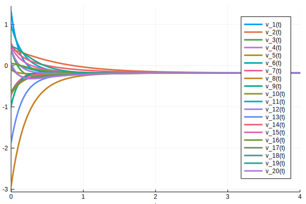
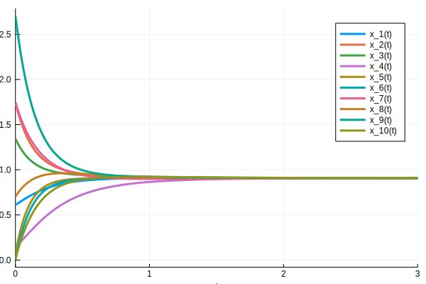

Network diffusion
This introductory example explains the use of the basic types and constructors in NetworkDynamics.jl by modeling a simple diffusion on an undirected network.
Theoretical background
Diffusion processes are relevant for phenomena as diverse as heat conduction, electrical currents, and random walks. Generally speaking they describe the tendency of systems to evolve towards a state of equally distributed heat, charge or concentration. In such system the local temperature (or concentration) changes according to its difference with its neighborhood, i.e. the temperature gradient.
Let $g$ be a graph with $N$ nodes and adjacency matrix $A$. Let $v = (v_1, \dots, v_n)$ be a vector of (abstract) temperatures or concentrations at each node $i = 1, \dots, N$. Then the rate of change of state $v_i$ is described by its difference with its neighbors and we obtain the following ordinary differential equation
The sum on the right hand side plays the role of a (discrete) gradient. If the temperature at node $i$ is higher than at its neighboring node $j$ it will decrease along that edge.
Modeling diffusion in NetworkDynamics.jl
From the above considerations we see that in this model the nodes do not have any internal dynamics - if a node was disconnected from the rest of the network its state would never change, since then $A_{ij} = 0 \; \forall j$ and hence $\dot v_i = 0$. This means that the evolution of a node depends only on the interaction with its neighbors. In NetworkDynamics.jl interactions with neighbors are described by equations for the edges.
function diffusionedge!(e, v_s, v_d, p, t)
# usually e, v_s, v_d are arrays, hence we use the broadcasting operator .
e .= v_s - v_d
nothing
endThe function diffusionedge! takes as inputs the current state of the edge e, its source vertex v_s, its destination vertex v_d, a vector of parameters p and the time t. In order to comply with the syntax of NetworkDynamics.jl we always have to define functions for static edges with exactly these arguments, eventhough we do not need p and t for the diffusion example.
diffusionedge! is called a mutating function, since it modifies (or mutates) one of its inputs, namely the edge state e. As a convention in julia names of mutating functions end with an !. The use of mutating functions reduces allocations and thereby speeds up computations. After the function call the edge's value e equals the difference between its source and its destination vertex (i.e. the discrete gradient along that edge).
The contributions of the different edges are then summed up in each vertex.
function diffusionvertex!(dv, v, e_s, e_d, p, t)
# usually v, e_s, e_d are arrays, hence we use the broadcasting operator .
dv .= 0.
# edges for which v is the source
for e in e_s
dv .-= e
end
# edges for which v is the destination
for e in e_d
dv .+= e
end
nothing
endJust like above the input arguments v, e_s, e_d, p, t are mandatory for the syntax of vertex functions. The additional input dv corresponding to the derivative of the vertex' state is mandatory for vertices described by ordinary differential equations.
Something unexpected happens in the for-loops: The contributions of the connecting edges are subtracted or added depending on v being the source or the destination of an edge. However we are modeling diffusion on an undirected network, hence the concepts of source and destination are not defined!
The reason for this syntax is found in the LightGraphs.jl package on which NetworkDynamics.jl is based.
How to deal with abstract edge directions in undirected graphs
LightGraphs.jl implements edges as pairs of node indices i and j. Pairs are basic julia data types consisting of two fixed elements, definded by writing i => j. In directed graphs these pairs additionally represent the direction in which the edge is pointing (from the first two the second element). In undirected graphs every edge is represent by only a single pair i => j if index i is smaller than index j and j => i otherwise. Hence, even for undirected graphs every edge has an abstract direction, specified by the pair of indices of the attached nodes.
A LightGraphs.jl user, who is only interested in undirected graphs, usually does not have to deal with this abstract directionality. However since NetworkDynamics.jl is interfacing directly to the underlying graph objects, we have to keep in mind that since edges are represented by pairs every edge has an abstract direction and thus a source and a destination.
In the diffusion example the coupling terms have to be modified accordingly. Assume node $i$ is connected to node $j$ by an undirected edge.
- Case:
i => j
If the abstract edge direction points from $i$ to $j$ then the edge value will be $v_i - v_j$. Hence we have to subtract this term from dv.
- Case:
j => i
In this case the edge value is $v_j - v_i$. Of course that's just $-(v_i - v_j)$ and can be directly added to dv.
Caveat: Symmetric and asymmetric coupling terms
The coupling term $g(i, j) := v_i - v_j$ is anti-symmetric, that is $g(i,j) = - g(j,i)$ and hence multiplying some edge values with -1 restores the behaviour of undirected edges. The same property holds for other important coupling terms like $g(i,j) = \sin(v_i - v_j)$. On the other hand, if the coupling term happens to be symmetric, i.e. $g(i,j) = g(j,i)$ we don't have to worry about the abstract direction at all.
However, some coupling terms are neither symmetric nor anti-symmetric like the chemical coupling between neurons. In this case it is a viable strategy to double the number of edge variables, compute both outcomes and use only one depending on the abstract direction of the edge. For more details have a look at the example on chemical coupling.
Constructing the network
With the preliminaries out of the way, it only takes a few steps to assemble the network dynamics.
using LightGraphs
N = 20 # number of nodes
k = 4 # average degree
g = barabasi_albert(N, k) # a little more exciting than a bare random graphThe Barabási–Albert model generates a scale-free random graph.
using NetworkDynamics
nd_diffusion_vertex = ODEVertex(f! = diffusionvertex!, dim = 1)
nd_diffusion_edge = StaticEdge(f! = diffusionedge!, dim = 1)
nd = network_dynamics(nd_diffusion_vertex, nd_diffusion_edge, g)ODEVertexband StaticEdge are functions wrappers that equip the functions we defined above with additional information like dim and return objects of type VertexFunction and EdgeFunction. Then the key constructor network_dynamics combines them with the topological information contained in the graph g and returns an ODEFunction compatible with the solvers of DifferentialEquations.jl. The keyword dim specifies the number of variables at each edge or node.
using OrdinaryDiffEq
x0 = randn(N) # random initial conditions
ode_prob = ODEProblem(nd, x0, (0., 4.))
sol = solve(ode_prob, Tsit5());We are solving the diffusion problem on the time interval $[0, 4]$ with the Tsit5() algorithm, which is recommended by the authors of DifferentialEquations.jl for most non-stiff problems.
using Plots
plot(sol, vars = syms_containing(nd, "v"));
The plotting is straightforward. The vars keyword allows us to pass a list of indices or symbols specifiying the variables we want to plot. Symbols can be thought of as names given to the interal variables of an ODEFunction, much like the variables $x$ or $\phi$ in mathematical notation. The default symbol for vertex variables is v, however we are free to specify other symbols by passing them to the ODEVertex constructor.
syms_containing is a helper function that returns all symbols of an ODEProblem containg a specific string (or symbol).
To illustrate a very simple multi-dimensional case, in the following we simulate two independent diffusions on an identical network. The first uses the symbol x and is started with initial conditions drawn from the standard normal distribution $N(0,1)$, the second uses the symbol ϕ with squared standard normal inital conditions.
The symbols have to be passed with the keyword sym to ODEVertex.
N = 10 # number of nodes
k = 4 # average degree
g = barabasi_albert(N, k) # a little more exciting than a bare random graph
# We will have two independent diffusions on the network, hence dim = 2
nd_diffusion_vertex_2 = ODEVertex(f! = diffusionvertex!, dim = 2, sym = [:x, :ϕ])
nd_diffusion_edge_2 = StaticEdge(f! = diffusionedge!, dim = 2)
nd_2 = network_dynamics(nd_diffusion_vertex_2, nd_diffusion_edge_2, g)
x0_2 = vec(transpose([randn(N).^2 randn(N)])) # x ~ N(0,1)^2; ϕ ~ N(0,1)
ode_prob_2 = ODEProblem(nd_2, x0_2, (0., 3.))
sol_2 = solve(ode_prob_2, Tsit5());
# Try plotting the variables ϕ_i yourself. [To write ϕ type \phi and press TAB]
plot(sol_2, vars = syms_containing(nd_2, "x"));
Appendix: The network Laplacian $L$
The diffusion equation on a network can be rewritten as
where $d_i$ is the degree of node $i$ and $e_i^T$ is the $i$-th standard basis vector. Introducing the diagonal matrix $D$ that has the degree of node $i$ in its $i$-th row and the Laplacian matrix $L = D - A$ we arrive at
and finally
This is a linear system of ODEs and its solution is a matrix exponential. To study the asymptotic behaviour of the system it suffices to analyze the eigenspectrum of $L$. For this reason $L$ is an important construction in network science.